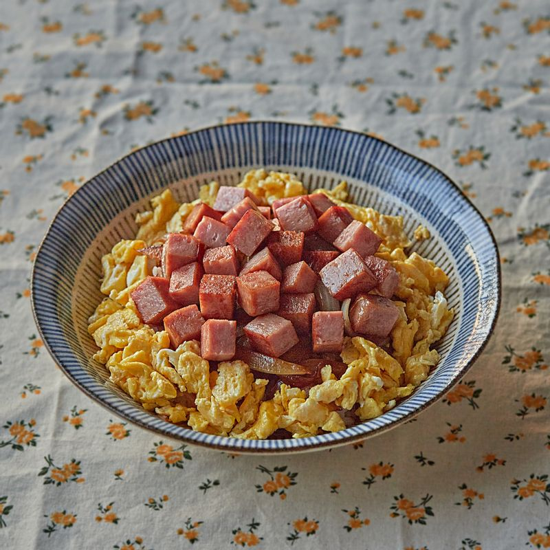

간장스팸덮밥

🥣 재료
밥 1공기
스팸 1/3캔
양파 1/4개
간장 2스푼
설탕 1스푼
물 3스푼
식용유 약간
달걀 프라이 (선택)
김가루 or 대파 (토핑)
🧑🍳 만드는 법
스팸과 양파를 잘게 썰어 팬에 기름을 두르고 볶아줍니다.
간장, 설탕, 물을 넣고 조림 양념을 만들어 졸입니다.
양념이 끓으면 중불로 줄여 걸쭉하게 조립니다.
밥 위에 조린 스팸을 올립니다.
기호에 따라 계란프라이와 김가루 또는 대파를 올려줍니다.
💡 꿀팁
간장은 태우지 않도록 중불에서 졸여주세요. 스팸의 짠맛에 따라 간장의 양을 조절하면 좋아요!
← 레시피 목록으로 돌아가기